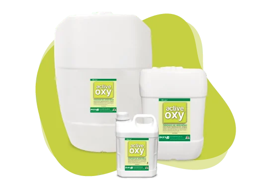

● Pré-dipping
Linha observada no site antigo
Active Oxy [CONFIRMAR linha ativa]
Solução de limpeza e higienização para tetos, à base de peróxido de hidrogênio, desenvolvida para a etapa antes da ordenha (pré-dipping). Espumante e pronto para uso.
Fonte: FISPQ Active Oxy (05/02/2018) — saniquimica.com.br
Ver produto Ficha · FDS